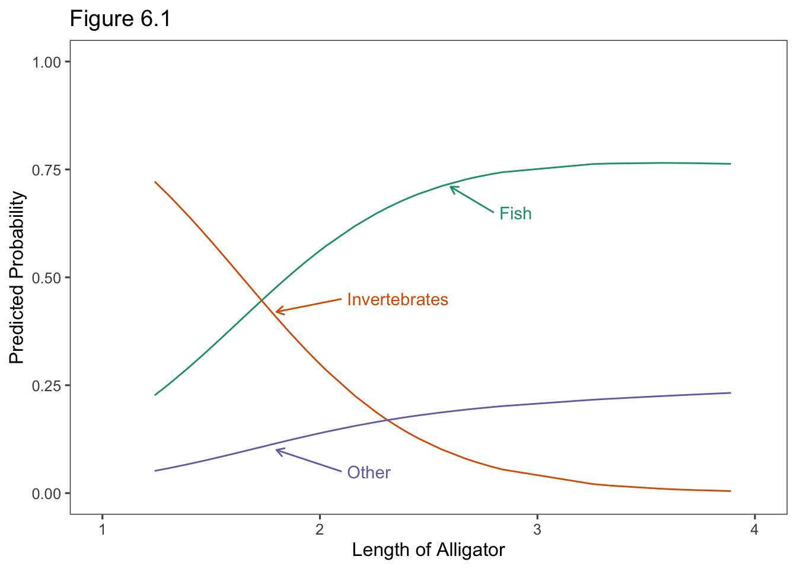
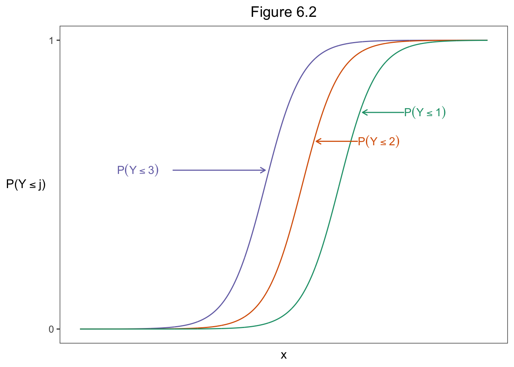

6 Multicategory Logit Models
6.1 Baseline-Category Logit Models for Nominal Responses
6.1.1 Baseline-Category Logits
\[\mathrm{log}\left(\frac{\pi_j}{\pi_c}\right),\ j = 1, \dots,\ c-1.\]
\[\begin{equation} \mathrm{log}(\frac{\pi_j}{\pi_c}) = \alpha_j + \beta_j x,\ j = 1, \dots, c-1 \tag{10} \end{equation}\]
\[\begin{equation} \mathrm{log}(\frac{\pi_1}{\pi_2}) = \mathrm{log}\left(\frac{\pi_1/\pi_3}{\pi_2/\pi_3}\right) = \mathrm{log}\left(\pi_1/\pi_3\right) - \mathrm{log}\left(\pi_2/\pi_3\right) \\ = (\alpha_1 + \beta_1 x) - (\alpha_2 + \beta_2 x) \\ = (\alpha_1 -\alpha_2) + (\beta_1 - \beta_2) x \tag{11} \end{equation}\]
\[\begin{equation} \mathrm{log}(\frac{\pi_j}{\pi_c}) = \alpha_j + \beta_{j1} x_1 + \beta_{j2} x_2 + \dots + \beta_{jp} x_p \ j = 1, \dots, c-1 \tag{12} \end{equation}\]
6.1.2 Example: What Do Alligators Eat?
library(tidyverse)
Gators <- read.table("http://users.stat.ufl.edu/~aa/cat/data/Alligators.dat",
header = TRUE, stringsAsFactors = TRUE)
Gators %>%
filter(row_number() %in% c(1, 2, n())) x y
1 1.24 I
2 1.30 I
3 3.89 FLoading required package: stats4
Call:
vglm(formula = y ~ x, family = multinomial, data = Gators)
Coefficients:
Estimate Std. Error z value Pr(>|z|)
(Intercept):1 1.6177 1.3073 1.237 0.21591
(Intercept):2 5.6974 1.7937 3.176 0.00149 **
x:1 -0.1101 0.5171 -0.213 0.83137
x:2 -2.4654 0.8996 NA NA
---
Signif. codes: 0 '***' 0.001 '**' 0.01 '*' 0.05 '.' 0.1 ' ' 1
Names of linear predictors: log(mu[,1]/mu[,3]), log(mu[,2]/mu[,3])
Residual deviance: 98.3412 on 114 degrees of freedom
Log-likelihood: -49.1706 on 114 degrees of freedom
Number of Fisher scoring iterations: 5
Warning: Hauck-Donner effect detected in the following estimate(s):
'x:2'
Reference group is level 3 of the response\[\mathrm{log}(\hat\pi_1/\hat\pi_3) = 1.618 - 0.110x, \\ \mathrm{log}(\hat\pi_1/\hat\pi_2) = 5.697 - 2.465x. \]
\[\mathrm{log}(\hat\pi_1 / \hat\pi_2) = (1.618 - 5.697) + [- 0.110 - (- 2.465)]x = -4.080 + 2.355x.\]
Call:
vglm(formula = y ~ x, family = multinomial(refLevel = 2), data = Gators)
Coefficients:
Estimate Std. Error z value Pr(>|z|)
(Intercept):1 -4.0797 1.4686 -2.778 0.00547 **
(Intercept):2 -5.6974 1.7937 -3.176 0.00149 **
x:1 2.3553 0.8032 NA NA
x:2 2.4654 0.8996 2.741 0.00613 **
---
Signif. codes: 0 '***' 0.001 '**' 0.01 '*' 0.05 '.' 0.1 ' ' 1
Names of linear predictors: log(mu[,1]/mu[,2]), log(mu[,3]/mu[,2])
Residual deviance: 98.3412 on 114 degrees of freedom
Log-likelihood: -49.1706 on 114 degrees of freedom
Number of Fisher scoring iterations: 5
Warning: Hauck-Donner effect detected in the following estimate(s):
'x:1'
Reference group is level 2 of the response 2.5 % 97.5 %
(Intercept):1 -7.3475058 -1.518699
(Intercept):2 -9.5913317 -2.485991
x:1 1.0111800 4.199073
x:2 0.8775186 4.463608fit0 <- vglm(y ~ 1, family=multinomial, data = Gators) # null model
deviance(fit0) # deviance for working model is 98.3412[1] 115.1419Likelihood ratio test
Model 1: y ~ x
Model 2: y ~ 1
#Df LogLik Df Chisq Pr(>Chisq)
1 114 -49.171
2 116 -57.571 2 16.801 0.0002248 ***
---
Signif. codes: 0 '***' 0.001 '**' 0.01 '*' 0.05 '.' 0.1 ' ' 16.1.3 Estimating Response Probabilities
The response probabilities relate to the model parameters by \[\pi_j = \frac{e^{\alpha_j + \beta_{j1} x_1 + \beta_{j2} x_2 + \dots + \beta_{jp} x_p}} {\sum_{h=1}^c e^{\alpha_h + \beta_{h1} x_1 + \beta_{h2} x_2 + \dots + \beta_{hp} x_p}},\ j = 1, \dots , c.\]
F I O
1 0.2265307 0.721964000 0.05150528
2 0.2502564 0.692466814 0.05727683
59 0.7630060 0.004733748 0.23226027library(ggthemes)
library(RColorBrewer)
colors <- brewer.pal(n = 4, name = "Dark2")
fitted(fit) %>%
data.frame(.) %>%
bind_cols(length = Gators$x) %>%
rename("Fish" = F, "Invertebrates" = I, "Other" = O) %>%
pivot_longer(cols = c(Fish, Invertebrates, Other)) %>%
ggplot() +
geom_line(aes(x = length, y = value, color = name)) +
scale_colour_manual(values=colors)+
ylim(0, 1) +
xlim(1, 4) +
xlab("Length of Alligator") +
ylab("Predicted Probability") +
theme_few() +
annotate(geom = "segment", x = 2.8, y = 0.65, xend = 2.60, yend = .71,
arrow = arrow(length = unit(2, "mm")) , color = colors[1]) +
annotate(geom = "text", x = 2.825, y = 0.65, label = "Fish",
hjust = "left", color = colors[1]) +
annotate(geom = "segment", x = 2.1, y = 0.45, xend = 1.80, yend = .42,
arrow = arrow(length = unit(2, "mm")) , color = colors[2]) +
annotate(geom = "text", x = 2.125, y = 0.45, label = "Invertebrates",
hjust = "left", color = colors[2]) +
annotate(geom = "segment", x = 2.1, y = 0.05, xend = 1.80, yend = .1,
arrow = arrow(length = unit(2, "mm")) , color = colors[3]) +
annotate(geom = "text", x = 2.125, y = 0.05, label = "Other",
hjust = "left", color = colors[3]) +
theme(legend.position="none") +
ggtitle("Figure 6.1")
6.1.4 Checking multinomial Model Goodness of Fit
\[G^2 = 2\sum \mathrm{observed[log(observed/fitted)]}.\]
6.1.5 Example: Belief in Afterlife
Afterlife <- read.table("http://users.stat.ufl.edu/~aa/cat/data/Afterlife.dat",
header = TRUE, stringsAsFactors = TRUE)
Afterlife race gender yes undecided no
1 white female 371 49 74
2 white male 250 45 71
3 black female 64 9 15
4 black male 25 5 13library(VGAM)
fit <- vglm(cbind(yes, undecided, no) ~ gender + race, family = multinomial,
data = Afterlife)
summary(fit)
Call:
vglm(formula = cbind(yes, undecided, no) ~ gender + race, family = multinomial,
data = Afterlife)
Coefficients:
Estimate Std. Error z value Pr(>|z|)
(Intercept):1 1.3016 0.2265 5.747 9.1e-09 ***
(Intercept):2 -0.6529 0.3405 -1.918 0.0551 .
gendermale:1 -0.4186 0.1713 -2.444 0.0145 *
gendermale:2 -0.1051 0.2465 -0.426 0.6700
racewhite:1 0.3418 0.2370 1.442 0.1493
racewhite:2 0.2710 0.3541 0.765 0.4442
---
Signif. codes: 0 '***' 0.001 '**' 0.01 '*' 0.05 '.' 0.1 ' ' 1
Names of linear predictors: log(mu[,1]/mu[,3]), log(mu[,2]/mu[,3])
Residual deviance: 0.8539 on 2 degrees of freedom
Log-likelihood: -19.7324 on 2 degrees of freedom
Number of Fisher scoring iterations: 3
No Hauck-Donner effect found in any of the estimates
Reference group is level 3 of the responsefit.gender <- vglm(cbind(yes, undecided, no) ~ gender, family = multinomial,
data = Afterlife)
deviance(fit.gender)[1] 2.848098Likelihood ratio test
Model 1: cbind(yes, undecided, no) ~ gender + race
Model 2: cbind(yes, undecided, no) ~ gender
#Df LogLik Df Chisq Pr(>Chisq)
1 2 -19.732
2 4 -20.730 2 1.9942 0.3689fit.race <- vglm(cbind(yes, undecided, no) ~ race, family = multinomial,
data = Afterlife)
deviance(fit.race)[1] 8.046504Likelihood ratio test
Model 1: cbind(yes, undecided, no) ~ gender + race
Model 2: cbind(yes, undecided, no) ~ race
#Df LogLik Df Chisq Pr(>Chisq)
1 2 -19.732
2 4 -23.329 2 7.1926 0.02742 *
---
Signif. codes: 0 '***' 0.001 '**' 0.01 '*' 0.05 '.' 0.1 ' ' 1 Afterlife.race Afterlife.gender yes undecided no
1 white female 0.7546 0.0996 0.1459
2 white male 0.6783 0.1224 0.1993
3 black female 0.7074 0.1002 0.1925
4 black male 0.6222 0.1206 0.25736.1.6 Discrete Choice Models*
6.1.7 Example: Shopping Destination Choice*
6.2 Cumulative Logit Models for Ordinal Responses {x6.2}
6.2.1 Cumulative Logit Models with Proportional Odds
\[\begin{equation} \mathrm{logit}[P(Y \le j)] = \alpha_j + \beta x,\ j = 1, \dots,\ c-1 \tag{13} \end{equation}\]
# https://rpubs.com/riazakhan94/logstcdistbasics
cdf=function(x,mu,s){
k=(x-mu)/s
return(1/(1+exp(-k)))
}
theData <- tibble(x=seq(-10,12,0.01)) %>%
mutate(curve0 = cdf(x, 0, 1)) %>%
mutate(curve2 = cdf(x, 2, 1)) %>%
mutate(curve4 = cdf(x, 4, 1))
library(ggthemes) # theme_few
theData %>%
ggplot(aes(x = x)) +
geom_line(aes(y = curve0), color = colors[3]) +
geom_line(aes(y = curve2), color = colors[2]) +
geom_line(aes(y = curve4), color = colors[1]) +
ggtitle("Figure 6.2") +
ylab(expression("P(Y" <= "j)")) +
scale_y_continuous(breaks=c(0,1),
labels=c("0", "1")) +
theme_few() +
theme(axis.text.x = element_blank(),
axis.ticks.x = element_blank(),
axis.title.y = element_text(angle = 0, vjust = 0.5),
plot.title = element_text(hjust = 0.5)) +
annotate(geom = "segment", x =-5, y = 0.55, xend = 0.0, yend = .55,
arrow = arrow(length = unit(2, "mm")), color = colors[3]) +
annotate(geom = "text", x = -8, y = 0.55, label = paste("P(Y <= 3)"),
parse = TRUE,hjust = "left", color = colors[3]) +
annotate(geom = "segment", x =5, y = 0.65, xend = 2.75, yend = .65,
arrow = arrow(length = unit(2, "mm")) , color = colors[2]) +
annotate(geom = "text", x = 5, y = 0.65, label = paste("P(Y <= 2)"),
parse = TRUE, hjust = "left", color = colors[2]) +
annotate(geom = "segment", x =7.5, y = 0.75, xend = 5.25, yend = .75,
arrow = arrow(length = unit(2, "mm")) , color = colors[1]) +
annotate(geom = "text", x = 7.5, y = 0.75, label = paste("P(Y <= 1)"),
parse = TRUE, hjust = "left", color = colors[1]) 
\[\frac{P(Y \le j\ |\ x = a) / P(Y > j\ |\ x = a)}{P(Y \le j\ |\ x = b) / P(Y > j\ |\ x = b)}.\]
\[\begin{equation} \mathrm{logit}[P(Y \le j)] = \alpha_j + \beta_1 x_1 + \beta_2 x_2 + \cdots + \beta_p x_p,\ j = 1, \dots,\ c-1 \tag{14} \end{equation}\]
6.2.2 Example: Political Ideology and Political Party Affiliation
Polviews <- read.table("http://users.stat.ufl.edu/~aa/cat/data/Polviews.dat",
header = TRUE, stringsAsFactors = TRUE)
Polviews gender party y1 y2 y3 y4 y5
1 female dem 25 105 86 28 4
2 female repub 0 5 15 83 32
3 male dem 20 73 43 20 3
4 male repub 0 1 14 72 32library(VGAM)
# parallel = TRUE imposes proportional odds structure
# 4 intercepts for 5 y categories
fit <- vglm(cbind(y1,y2,y3,y4,y5) ~ party + gender,
family = cumulative(parallel = TRUE),
data = Polviews)
summary(fit) # same effects for all 4 logits
Call:
vglm(formula = cbind(y1, y2, y3, y4, y5) ~ party + gender, family = cumulative(parallel = TRUE),
data = Polviews)
Coefficients:
Estimate Std. Error z value Pr(>|z|)
(Intercept):1 -2.12233 0.16875 -12.577 <2e-16 ***
(Intercept):2 0.16892 0.11481 1.471 0.141
(Intercept):3 1.85716 0.15103 12.297 <2e-16 ***
(Intercept):4 4.65005 0.23496 19.791 <2e-16 ***
partyrepub -3.63366 0.21785 -16.680 <2e-16 ***
gendermale 0.04731 0.14955 0.316 0.752
---
Signif. codes: 0 '***' 0.001 '**' 0.01 '*' 0.05 '.' 0.1 ' ' 1
Names of linear predictors: logitlink(P[Y<=1]), logitlink(P[Y<=2]),
logitlink(P[Y<=3]), logitlink(P[Y<=4])
Residual deviance: 9.8072 on 10 degrees of freedom
Log-likelihood: -35.2032 on 10 degrees of freedom
Number of Fisher scoring iterations: 4
No Hauck-Donner effect found in any of the estimates
Exponentiated coefficients:
partyrepub gendermale
0.02641936 1.04844945 \[P(Y \le j) = \frac{\mathrm{exp}(\alpha_j + \beta_1 x_1 + \beta_2 x_2)}{1 + \mathrm{exp}(\alpha_j + \beta_1 x_1 + \beta_2 x_2)}.\]
\[P(Y=3)= P(Y \le 3) - P(Y \le 2).\]
Polviews <- read.table("http://users.stat.ufl.edu/~aa/cat/data/Polviews.dat",
header = TRUE, stringsAsFactors = TRUE)
# y1 = very lib, y5 = very conservative.
data.frame(Polviews$gender, Polviews$party, round(fitted(fit), 4)) Polviews.gender Polviews.party y1 y2 y3 y4 y5
1 female dem 0.1069 0.4352 0.3228 0.1256 0.0095
2 female repub 0.0032 0.0272 0.1144 0.5895 0.2657
3 male dem 0.1115 0.4423 0.3165 0.1206 0.0090
4 male repub 0.0033 0.0284 0.1189 0.5927 0.25666.2.3 Inference about Cumulative Logit Model Parameters
fit2 <- vglm(cbind(y1,y2,y3,y4,y5) ~ gender,
family = cumulative(parallel = TRUE),
data = Polviews)
VGAM::lrtest(fit, fit2)Likelihood ratio test
Model 1: cbind(y1, y2, y3, y4, y5) ~ party + gender
Model 2: cbind(y1, y2, y3, y4, y5) ~ gender
#Df LogLik Df Chisq Pr(>Chisq)
1 10 -35.203
2 11 -236.827 1 403.25 < 2.2e-16 ***
---
Signif. codes: 0 '***' 0.001 '**' 0.01 '*' 0.05 '.' 0.1 ' ' 1fit <- vglm(cbind(y1,y2,y3,y4,y5) ~ party + gender,
family = cumulative(parallel = TRUE),
data = Polviews)
# profile likelihood CIs for beta_1 and beta_2 in full model
confint(fit, method = "profile") 2.5 % 97.5 %
(Intercept):1 -2.46596771 -1.8014863
(Intercept):2 -0.05464962 0.3937706
(Intercept):3 1.56835767 2.1616181
(Intercept):4 4.20347943 5.1226824
partyrepub -4.07163810 -3.2178566
gendermale -0.24638939 0.3414038fit <- vglm(cbind(y5,y4,y3,y2,y1) ~ party + gender,
family = cumulative(parallel = TRUE),
data = Polviews)
library(tidyverse)
confint(fit, method = "profile") %>%
data.frame() %>%
rename(LCL= X2.5..) %>%
rename(UCL= X97.5..) %>%
rownames_to_column(var = "Param") %>%
filter(Param == "partyrepub") %>%
mutate(`LCL OR` = exp(LCL)) %>%
mutate(`UCL OR` = exp(UCL)) %>%
mutate(across(c("LCL", "UCL"), round, 3)) %>%
mutate(across(c("LCL OR", "UCL OR"), round, 1)) Param LCL UCL LCL OR UCL OR
1 partyrepub 3.218 4.072 25 58.76.2.4 Increased Power for Ordinal Analyses
6.2.5 Example: Happiness and Family Income
Happy <- read.table("http://users.stat.ufl.edu/~aa/cat/data/Happy.dat",
header = TRUE, stringsAsFactors = TRUE)
Happy income y1 y2 y3
1 1 37 90 45
2 2 25 93 56
3 3 6 18 13fit <- vglm(cbind(y1, y2, y3) ~ income, family = cumulative(parallel = TRUE),
data = Happy)
fit0 <- vglm(cbind(y1, y2, y3) ~ 1, family = cumulative(parallel = TRUE),
data = Happy)
VGAM::lrtest(fit, fit0)Likelihood ratio test
Model 1: cbind(y1, y2, y3) ~ income
Model 2: cbind(y1, y2, y3) ~ 1
#Df LogLik Df Chisq Pr(>Chisq)
1 3 -14.566
2 4 -16.121 1 3.109 0.07786 .
---
Signif. codes: 0 '***' 0.001 '**' 0.01 '*' 0.05 '.' 0.1 ' ' 1fit2 <- vglm(cbind(y1, y2, y3) ~ factor(income), family = multinomial,
data = Happy)
fit0 <- vglm(cbind(y1, y2, y3) ~ 1, family = multinomial,
data = Happy)Warning in vglm.fitter(x = x, y = y, w = w, offset = offset, Xm2 = Xm2, : some
quantities such as z, residuals, SEs may be inaccurate due to convergence at a
half-stepLikelihood ratio test
Model 1: cbind(y1, y2, y3) ~ factor(income)
Model 2: cbind(y1, y2, y3) ~ 1
#Df LogLik Df Chisq Pr(>Chisq)
1 0 -14.058
2 4 -16.121 4 4.1258 0.38926.2.6 Latent Variable Linear Models Imply Cumulative Link Models
\[y = j\ \mathrm{if}\ \alpha_{j-1} < y^* \le \alpha_j.\]
\[Y^* = \beta_1 x_1 + \beta_2 x_2 + \cdots + \beta_p x_p + \epsilon,\]
\[\begin{equation} \mathrm{link}[P(Y \le j)] = \alpha_j - \beta_1 x_1 - \beta_2 x_2 - \cdots - \beta_p x_p,\ j = 1, \dots,\ c-1 \tag{15} \end{equation}\]
6.2.7 Invariance to Choice of Response Categories
6.3 Cumulative Link Models: Model Checking and Extensions *
6.3.1 Checking Ordinal Model Goodness of Fit
Polviews <- read.table("http://users.stat.ufl.edu/~aa/cat/data/Polviews.dat",
header = TRUE, stringsAsFactors = TRUE)
library(VGAM)
# parallel = TRUE imposes proportional odds structure
# 4 intercepts for 5 y categories
fit <- vglm(cbind(y1,y2,y3,y4,y5) ~ party + gender,
family = cumulative(parallel = TRUE),
data = Polviews)
fitWithInteraction <-
vglm(cbind(y1,y2,y3,y4,y5) ~ party + gender + party:gender,
family = cumulative(parallel = TRUE),
data = Polviews)
VGAM::lrtest(fitWithInteraction, fit)Likelihood ratio test
Model 1: cbind(y1, y2, y3, y4, y5) ~ party + gender + party:gender
Model 2: cbind(y1, y2, y3, y4, y5) ~ party + gender
#Df LogLik Df Chisq Pr(>Chisq)
1 9 -34.526
2 10 -35.203 1 1.3544 0.24456.3.2 Cumulative Logit Model without Proportional Odds
notParallel <- summary(vglm(cbind(y1,y2,y3,y4,y5) ~ party + gender,
family = cumulative, # parallel=FALSE by default
data = Polviews))
parallel <- summary(vglm(cbind(y1,y2,y3,y4,y5) ~ party + gender,
family = cumulative(parallel=TRUE),
data = Polviews))
VGAM::lrtest(notParallel, parallel)Likelihood ratio test
Model 1: cbind(y1, y2, y3, y4, y5) ~ party + gender
Model 2: cbind(y1, y2, y3, y4, y5) ~ party + gender
#Df LogLik Df Chisq Pr(>Chisq)
1 4 -32.093
2 10 -35.203 6 6.2211 0.39896.3.3 Simpler Interpretatoins Using Probabiliteis
6.3.4 Example: Modeling Mental Impairment
\[\mathrm{logit}[P(Y \le j)] = \alpha_j - \beta_1 x_1 - \beta_2 x_2,\]
Mental <- read.table("http://users.stat.ufl.edu/~aa/cat/data/Mental.dat",
header = TRUE, stringsAsFactors = TRUE)
Mental %>%
filter(row_number() %in% c(1, 2, n())) impair ses life
1 1 1 1
2 1 1 9
3 4 0 9# polr() function requires response to be a factor
y <- factor(Mental$impair)
fit <- MASS::polr(y ~ life + ses, method = "logistic", data = Mental)
summary(fit)
Re-fitting to get HessianCall:
MASS::polr(formula = y ~ life + ses, data = Mental, method = "logistic")
Coefficients:
Value Std. Error t value
life 0.3189 0.1210 2.635
ses -1.1112 0.6109 -1.819
Intercepts:
Value Std. Error t value
1|2 -0.2819 0.6423 -0.4389
2|3 1.2128 0.6607 1.8357
3|4 2.2094 0.7210 3.0644
Residual Deviance: 99.0979
AIC: 109.0979 1 2 3 4
0.1617811 0.3007047 0.2372921 0.3002222 1 2 3 4
0.3696301 0.3536702 0.1529587 0.1237410 1 2 3 4
0.42998727 0.34080542 0.13029529 0.09891202 1 2 3 4
0.04102612 0.11914448 0.18048372 0.65934567 1 2 3 4
0.69621280 0.21463441 0.05428168 0.03487110 1 2 3 4
0.1150236 0.2518325 0.2439856 0.3891584
Re-fitting to get Hessian$ME.1
effect std.error z.value p.value
life -0.057 0.019 -3.005 0.003
ses 0.198 0.104 1.913 0.056
$ME.4
effect std.error z.value p.value
life 0.048 0.017 2.780 0.005
ses -0.171 0.094 -1.819 0.069
attr(,"class")
[1] "ocAME"6.3.5 A Latent Variable Probability Comparison of Groups
\[\hat P(Y_2^* > Y_1^*) = \mathrm{exp}(\hat\beta_2/\sqrt{2})/[1 + \mathrm{exp}(\hat\beta_2/\sqrt{2})] = 0.31\]
6.3.6 Cumulative Probit Model
Polviews2 <- read.table("http://users.stat.ufl.edu/~aa/cat/data/Polviews2.dat",
header = TRUE, stringsAsFactors = TRUE)
Polviews2 %>%
filter(row_number() %in% c(1, 2, n())) subject gender party ideology
1 1 female dem 1
2 2 female dem 1
3 661 male repub 5y <- factor(Polviews2$ideology)
fit.probit <- MASS::polr(y ~ party + gender,
method = "probit",
data = Polviews2)
summary(fit.probit) # same effects for all 4 logits
Re-fitting to get HessianCall:
MASS::polr(formula = y ~ party + gender, data = Polviews2, method = "probit")
Coefficients:
Value Std. Error t value
partyrepub 2.032496 0.10996 18.48409
gendermale -0.007489 0.08562 -0.08747
Intercepts:
Value Std. Error t value
1|2 -1.2353 0.0890 -13.8853
2|3 0.1033 0.0694 1.4901
3|4 1.0532 0.0808 13.0376
4|5 2.6171 0.1194 21.9153
Residual Deviance: 1565.195
AIC: 1577.195 6.3.7 \(R^2\) Based on Latent Variable Model
\[R_L^2 = \frac{\sum_i(y_i^* - \bar y^*)^2 - \sum_i(\hat y_i^* - \bar y^*)^2}{\sum_i(y_i^* - \bar y^*)^2} = \frac{\sum_i(\hat y_i^* - \bar y^*)^2}{\sum_i(y_i^* - \bar y^*)^2},\]
fit.logit <- MASS::polr(y ~ party + gender, method = "logistic",
data = Polviews2)
# lp = linear predictor
# R-squared based on logistic latent variable model
r <- var(fit.logit$lp)/ (var(fit.logit$lp) + pi^2/3)
r[1] 0.4869847[1] 0.6978429[1] 0.4945316.3.8 Bayesian Inference for Multinomial Models
6.3.9 Example: Modeling Mental Impairment Revisited
Mental2 <- read.table("http://users.stat.ufl.edu/~aa/cat/data/Mental2.dat",
header = TRUE, stringsAsFactors = TRUE)
Mental2 %>%
filter(row_number() %in% c(1, 2, n())) impair ses life
1 i1 0.5 1
2 i1 0.5 9
40 i4 -0.5 9
Re-fitting to get HessianCall:
MASS::polr(formula = impair ~ life + ses, data = Mental2, method = "logistic")
Coefficients:
Value Std. Error t value
life 0.3189 0.1210 2.635
ses -1.1112 0.6109 -1.819
Intercepts:
Value Std. Error t value
i1|i2 0.2737 0.5756 0.4755
i2|i3 1.7684 0.6325 2.7958
i3|i4 2.7650 0.7147 3.8690
Residual Deviance: 99.0979
AIC: 109.0979 #install_github("tjmckinley/BayesOrd")
library(BayesOrd)
# mnb, varb are mean, var. of beta's; vart = var of intercepts
fit <- bayesord(impair ~ life + ses, fixed = TRUE, mnb = 0, varb = 100,
niter = 1e+6, nchains = 2, start = 10000,
data = Mental2)
summary(fit, digits = 3)
props <- as.matrix(fit$beta)
# posterior P(beta > 0) for each effect parameter
apply(props, 2, function(x)sum(x> 0)/length(x))6.4 Paired-Category Logit Modeling of Ordinal Response *
6.4.1 Adjacent-Categories Logits
\[\mathrm{log}\left(\frac{\pi_j}{\pi_{j+1}}\right),\ j = 1, \dots, c-1.\] \[\begin{equation} \mathrm{log}\left(\frac{\pi_j}{\pi_{j+1}}\right) = \alpha_j + \beta x,\ j = 1, \dots, c-1. \tag{16} \end{equation}\]
6.4.2 Example: Political Ideology Revisited
fit <- vglm(cbind(y1,y2,y3,y4,y5) ~ party + gender,
family = acat(parallel = TRUE, reverse = TRUE),
data = Polviews)
# family=acat gives adjacent-category logits
summary(fit)
Call:
vglm(formula = cbind(y1, y2, y3, y4, y5) ~ party + gender, family = acat(parallel = TRUE,
reverse = TRUE), data = Polviews)
Coefficients:
Estimate Std. Error z value Pr(>|z|)
(Intercept):1 -1.38707 0.17079 -8.121 4.61e-16 ***
(Intercept):2 0.36218 0.11749 3.083 0.00205 **
(Intercept):3 0.77529 0.14720 5.267 1.39e-07 ***
(Intercept):4 2.99240 0.23132 12.936 < 2e-16 ***
partyrepub -2.23478 0.16841 -13.270 < 2e-16 ***
gendermale 0.01212 0.09661 0.125 0.90016
---
Signif. codes: 0 '***' 0.001 '**' 0.01 '*' 0.05 '.' 0.1 ' ' 1
Names of linear predictors: loglink(P[Y=1]/P[Y=2]), loglink(P[Y=2]/P[Y=3]),
loglink(P[Y=3]/P[Y=4]), loglink(P[Y=4]/P[Y=5])
Residual deviance: 13.4665 on 10 degrees of freedom
Log-likelihood: -37.0329 on 10 degrees of freedom
Number of Fisher scoring iterations: 4
Warning: Hauck-Donner effect detected in the following estimate(s):
'partyrepub'[1] "0.1985672"6.4.3 Sequential Logits
6.4.4 Example: Tonsil Size and Streptococcus
Tonsils <- tibble(carrier = c("yes", "no"), y1 = c(19, 497),
y2 = c(29, 560), y3 = c(24, 269))
fit <- vglm(cbind(y1, y2, y3) ~ carrier, family = sratio(parallel = TRUE),
data = Tonsils)
summary(fit)
Call:
vglm(formula = cbind(y1, y2, y3) ~ carrier, family = sratio(parallel = TRUE),
data = Tonsils)
Coefficients:
Estimate Std. Error z value Pr(>|z|)
(Intercept):1 -0.51102 0.05614 -9.102 < 2e-16 ***
(Intercept):2 0.73218 0.07286 10.049 < 2e-16 ***
carrieryes -0.52846 0.19775 -2.672 0.00753 **
---
Signif. codes: 0 '***' 0.001 '**' 0.01 '*' 0.05 '.' 0.1 ' ' 1
Names of linear predictors: logitlink(P[Y=1|Y>=1]), logitlink(P[Y=2|Y>=2])
Residual deviance: 0.0057 on 1 degrees of freedom
Log-likelihood: -11.7659 on 1 degrees of freedom
Number of Fisher scoring iterations: 3
No Hauck-Donner effect found in any of the estimates